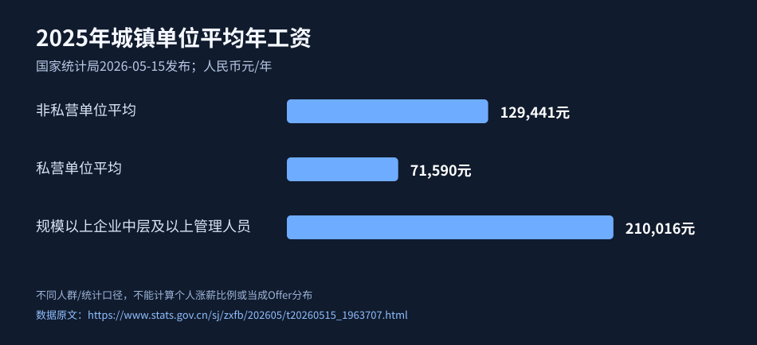

第01章 · 岗位定位与市场薪酬调查
薪资范围是多个分布的交集，不能用单一平均工资代替具体Offer。
读法：每步有具体操作、完成凭证、卡住怎么办。敏感资料只留在本人私有目录。
1. 确定目标岗位集合
具体操作： 根据已有经验列3类目标岗位，并写各自“可验证的竞争优势”。
完成凭证： 目标岗位表：主攻、探索、舍弃。
卡住怎么办： 跨度太大就先锁定有60%以上技能可迁移的方向。
- 完成并留存合规凭证
2. 采集30个真实岗位
具体操作： 记录发布日期、城市、企业、职责、级别、薪资口径、来源链接和岗位是否仍在招。
完成凭证： 30行岗位研究CSV。
卡住怎么办： 遇到无薪资信息标未知，不自行猜测补值。
- 完成并留存合规凭证
3. 做薪酬分层比较
具体操作： 把同城同岗位同职级同公司类型的样本放一起；区分标注薪资和最终实际报价。
完成凭证： 三个可比岗位群和薪资分布区间。
卡住怎么办： 样本不足十个时注明低置信度，用真实面试补充。
- 完成并留存合规凭证
4. 明确自己的议价筹码
具体操作： 列出3项有量化证据的优势：稀缺技能、业务业绩或可复制项目经验。
完成凭证： 一页“能力→业务价值→证据”表。
卡住怎么办： 缺量化数字可用有出处的过程性指标。
- 完成并留存合规凭证
5. 算清机会成本
具体操作： 比较岗位增加的工时、通勤、城市成本、稳定性、技能增量，不只看月薪。
完成凭证： 一张机会成本对照表。
卡住怎么办： 信息不足则进入面试验证而不是直接过滤。
- 完成并留存合规凭证
深入实操：构建“30个真实岗位”的可比样本
只采集近一段时间仍能核验的岗位，覆盖至少3家公司、尽量有不同规模与招聘平台。每条记录发布日期、链接、城市、行业、岗位实际职责、要求年限、是否带人、薪资写法、是否猎头转发。职位写的薪资范围不等于最终成交薪资，无法确认薪资结构的项单独标记缺失。
分组法：按城市×岗位族×经验级别×业务规模分层；避免混合北京算法负责人和三线城市执行岗位算平均值。每组样本不足时明确标“仅探索性样本”；统计中位区间的下限/上限时不做“市场必然价”。
示例（虚构）：搜集30条产品经理岗位，只有12条在城市、职责与年限上与你相近，其中5条标注“20-35k·14薪”，4条标“25-40k·12薪”，3条未明确发薪月数。先把可核实的9条拆为年固定现金区间，另外3条留空；千万别把“40k·14”当全部岗位的基准。
询问话术：“我看到了岗位薪资区间，想核对固定月薪、保证月数、绩效奖金是否浮动、股票是否有归属条件，便于确认是否匹配。”
本章验收：30条来源记录、至少10条尽可能可比样本、三档目标岗位列表、缺失字段清单。
真实研究与招聘证据（原始出处，可直接核验）
这些资料解释为什么要执行本章任务；不能保证读者个人晋升或取得 Offer。
证据 S01 · 国家统计局2025年城镇单位平均工资（2026-05-15）
来源级别： 国家官方统计。样本/范围： 全国城镇法人单位及规模以上企业，按官方定义统计。
真实观察： 2025年非私营单位平均129441元、私营71590元；信息软件服务非私营单位248752元。
外推限制： 各组定义不同，均值不是个体招聘薪酬报价、也不是薪酬中位数；需按地区企业岗位重采样。
本章落地动作： 采样30个同城同岗有效JD，单独标出企业工资统计作宏观背景。
证据 S09 · Amazon中国高级产品经理职位10460727
来源级别： 企业招聘原文。样本/范围： 雇主公开岗位，工作地点上海，职位要求可公开查看。
真实观察： 工作要求包含研究、路线图、利益相关方协作、面向VP的汇报等。
外推限制： 非全市场岗位；链接随招聘状态变化，页面未给工资则绝不能编造报价。
本章落地动作： 逐条把JD能力写入证据矩阵，再按真实工作经历改简历。
数据图：2025年全国不同统计口径平均年工资

图源：国家统计局2025年工资调查。三个系列覆盖范围不同，禁止据图声称升职涨薪幅度、行业中位数或职位报价。